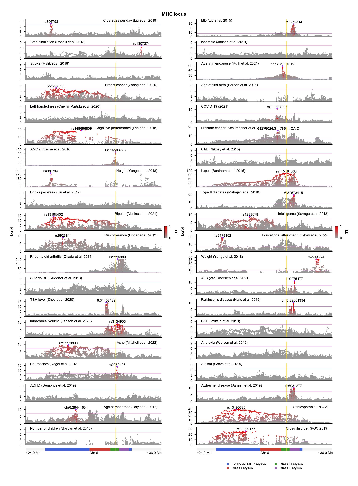

GeneticsMakie
The goal of GeneticsMakie.jl is to permit seamless data visualization and exploratory data analysis of the human genome within the larger Julia data science and OpenMendel ecosystems. The package provides convenient wrapper functions for wrangling genetic association results and plotting them using Makie.jl. Every component of a figure can be easily customized and extended, and the package generates high-quality, publication-ready figures.

Please peruse the documentations of Makie.jl, CSV.jl, DataFrames.jl, and SnpArrays.jl. Familiarity with these packages will allow visualization of most types of genetic and genomic data. Makie.jl's default layout tools are particularly useful for plotting different genetic and genomic data modalities as separate layers.
If you have run a genome-wide association study (GWAS) at the variant-level, and you would like to eyeball genome-wide significant loci across hundreds of phenotypes, then you are in the right place.